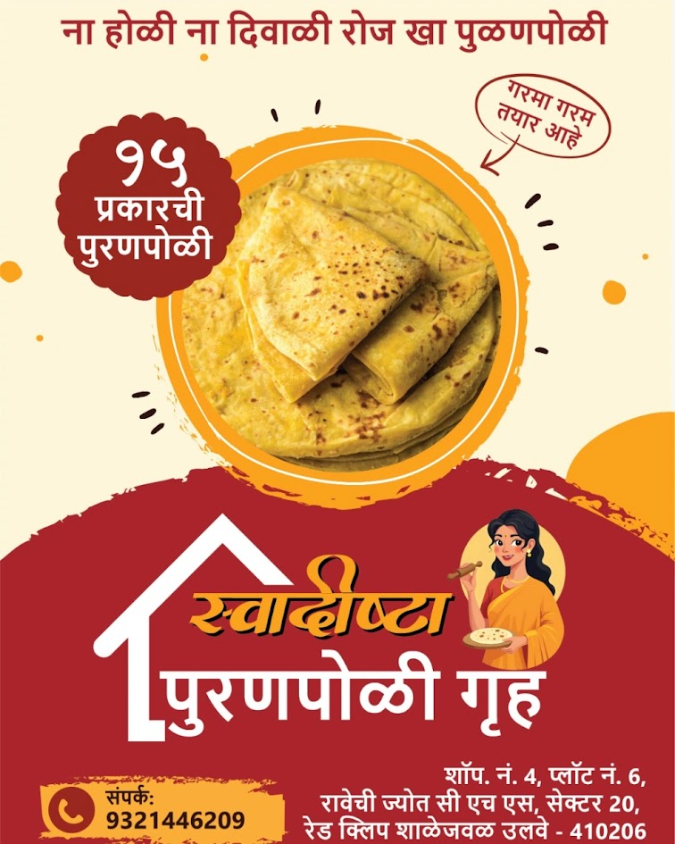

Preserving Authentic Maharashtrian Flavours
When you choose us, you’re not just buying sweets — you’re experiencing the warmth of Maharashtrian culture, made fresh with care and devotion.

At Swadishta Puranpoli Gruh, we believe that food is not just something you eat — it is a feeling, a memory, and a connection to home. With our heartfelt tagline, “Na Maida, Na Rava… Roj Puranpoli Khava”, we proudly serve purity, tradition, and love in every bite. Our shop, located in Ulwe, Maharashtra, is led by a passionate woman entrepreneur who has turned her love for traditional cooking into a brand that celebrates authentic Maharashtrian flavours. What started as a homely kitchen passion has now grown into a trusted destination for those craving real, homemade taste. We offer 15 delicious varieties of Puranpoli, all prepared using pure wheat flour — never maida or rava — along with authentic ghee and jaggery sourced directly from our own town and village. Every ingredient is carefully selected to maintain quality, purity, and traditional richness. Along with our signature Puranpolis, we also serve crunchy homemade snacks prepared using time-honored recipes and aromatic spices. Each product carries the warmth of a mother’s kitchen — soft, rich, comforting, and full of love.
To deliver authentic taste, homemade quality, and the comforting flavour of tradition in every order.
We use only premium quality jaggery, chana dal & pure ghee.
Authentic Maharashtrian taste passed down generations.
Every order is made fresh to ensure best flavour.